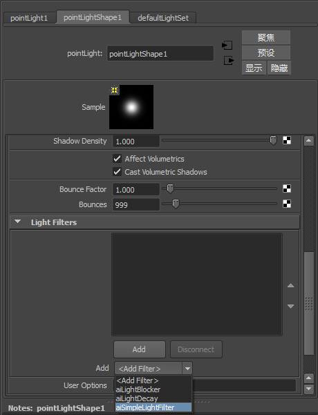

要创建此着色器，像先前一样，您将需要一个源代码文件、一个加载器、一个元数据和一个模板。我们将在此处对它们进行介绍。
我们可以将灯光过滤器着色器添加到之前在前面部分中创建的着色器加载器：
首先，创建着色器：
simpleLightFilter.cpp
#include <ai.h>
AI_SHADER_NODE_EXPORT_METHODS(SimpleLightFilterMtd);
enum simpleLightFilterParams {
p_intensity
};
node_parameters
{
AiParameterFlt("Intensity", 0.0f);
}
node_initialize
{
}
node_update
{
}
node_finish
{
}
shader_evaluate
{
// test if we are running as a light filter
if (sg->light_filter)
{
float intensity = AiShaderEvalParamFlt(p_intensity);
sg->light_filter->Liu = sg->light_filter->Liu*intensity;
}
} 现在，要将着色器添加到加载器，您只需将此代码添加到前面部分中的先前 loader.cpp 文件：
loader.cpp
...
extern AtNodeMethods* SimpleLightFilterMtd;
enum{
SHADER_1 = 0,
SHADER_2,
PARAMETERS_SHADER,
SIMPLE_LIGHT_FILTER
};
...
case SIMPLE_LIGHT_FILTER:
node->methods = SimpleLightFilterMtd;
node->output_type = AI_TYPE_RGB;
node->name = "simpleLightFilter";
node->node_type = AI_NODE_SHADER;
break;
... 您将能够按照前面部分所述再次编译灯光过滤器和加载器，确保 Arnold 可以正确加载着色器，并将已编译的着色器复制到正确的文件夹（就像法线着色器），以便 Maya 可以使用它。
要将灯光过滤器集成到 Maya 中，我们需要如前面部分中一样向元数据文件中添加额外的信息，并创建一个模板脚本。
要添加元数据信息，您只需将其添加到在前面部分中创建的 loader.mtd 文件，其中此文件与已编译着色器文件位于同一文件夹中。
loader.mtd
[node simplyLightFilter]
maya.name STRING "aiSimplyLightFilter"
maya.id INT 0x00070004
maya.classification STRING "light/filter"
maya.lights STRING "pointLight spotLight"
[attr Intensity]
maya.name STRING "lightIntensity"
softmin FLOAT 0
softmax FLOAT 10
default FLOAT 1 在这里，需要将 maya.classification 设置为“light/filter”，这一点非常重要。此外，还可以将 maya.lights 设置为一个字符串，其中包含可使用此灯光过滤器的所有灯光（如 ambientLight、directionalLight、pointLight、spotLight、areaLight 或 aiAreaLight）。
如前面部分中所述，我们可以使用与法线着色器相同的方式为此灯光过滤器创建一个简单模板。无论如何，我们应避免某些对灯光过滤器没有任何意义的命令：
aiSimpleLightFilterTemplate.py
import maya.mel
from mtoa.ui.ae.shaderTemplate import ShaderAETemplate
class AEaiSimpleLightFilterTemplate(ShaderAETemplate):
def setup(self):
self.beginScrollLayout()
self.beginLayout("Parameters", collapse=False)
self.addControl('lightIntensity', label="Light Intensity")
self.endLayout()
maya.mel.eval('AEdependNodeTemplate '+self.nodeName)
self.addExtraControls()
self.endScrollLayout() 现在，当您创建此灯光过滤器接受的一种灯光时，可以在灯光的“Arnold”部分的“灯光过滤器”(Light Filters)部分中添加此灯光过滤器：

图 7：“灯光过滤器”(Light Filters)菜单